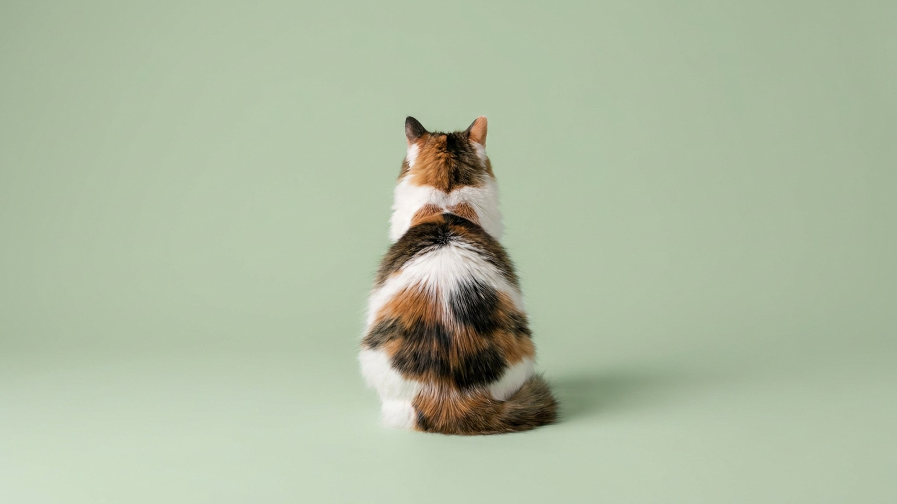

Кошка запрыгнула на колени, устроилась — и повернулась к вам спиной, уставившись в комнату. Выглядит как демонстративный игнор, но на кошачьем языке это ровно наоборот. Поза спиной — один из самых сильных знаков доверия, который вам вообще может сделать кошка. Разберём, почему это так, как прочитать её настроение по хвосту и когда «спиной» действительно сигнал присмотреться.
🐾 Всё о вашем питомце — в одном приложении
AI-ветеринар, дневник, напоминания о прививках и уходе. Установите AnimaLife — это бесплатно, в Telegram и MAX.
У кошки, как у любого хищника, самое уязвимое направление — то, что за спиной. В природе она никогда не подставит незащищённый тыл тому, кому не верит. Поворачиваясь к вам спиной, кошка фактически говорит: «я знаю, что отсюда угрозы не будет, посторожи, а я посмотрю в другую сторону».
Это распределение «зон охраны», как в кошачьей группе, где животные садятся спинами друг к другу и держат под контролем разные направления. Вы для неё — надёжный напарник, а не угроза.
Спина сама по себе — знак хороший, но общее настроение читается по деталям. На что смотреть:
Иногда кошка отворачивается, потому что ей некомфортно: слишком много внимания, громкие звуки, чужие люди. Тогда поза спиной сочетается с напряжением — кошка будто «выключает» раздражитель, отгораживаясь от него. Это не доверие, а просьба дать паузу.
Присмотреться стоит, если кошка вдруг стала отворачиваться и прятаться намного чаще обычного, уходит от контакта, которого раньше искала, меньше ест или выглядит вялой. Резкая смена привычек поведения — повод показать кошку ветеринару: так животные нередко маскируют дискомфорт.
🐾 Спросите AI-ветеринара прямо сейчас
AnimaLife — приложение, где AI-ветеринар отвечает на вопросы о кошке или собаке 24/7. Бесплатно, без записи и очередей.
🐾 Понравился разбор?
Подпишитесь на канал — каждый день разбираем по одному тревожному симптому у кошек и собак: что в пределах нормы, а когда пора к врачу. Подпишитесь, чтобы не пропустить разбор, который может спасти здоровье вашего питомца.
Доверие у кошки строится на предсказуемости, а не на настойчивости. Несколько простых привычек работают лучше любых уговоров:
Материал носит информационный характер и не заменяет очную консультацию ветеринара.